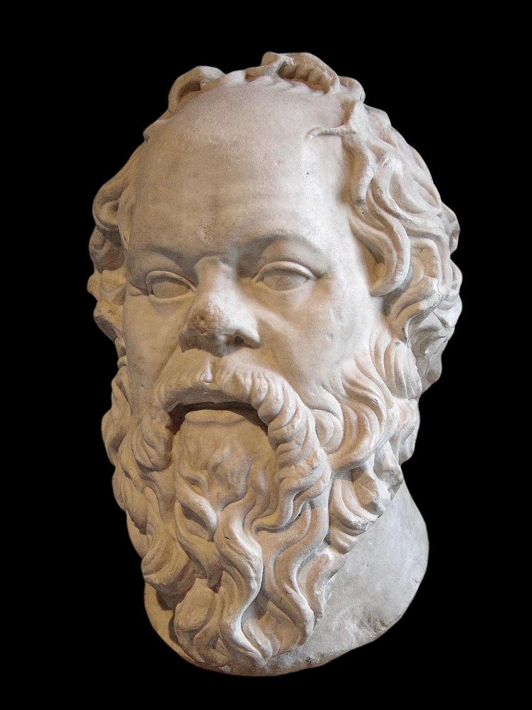
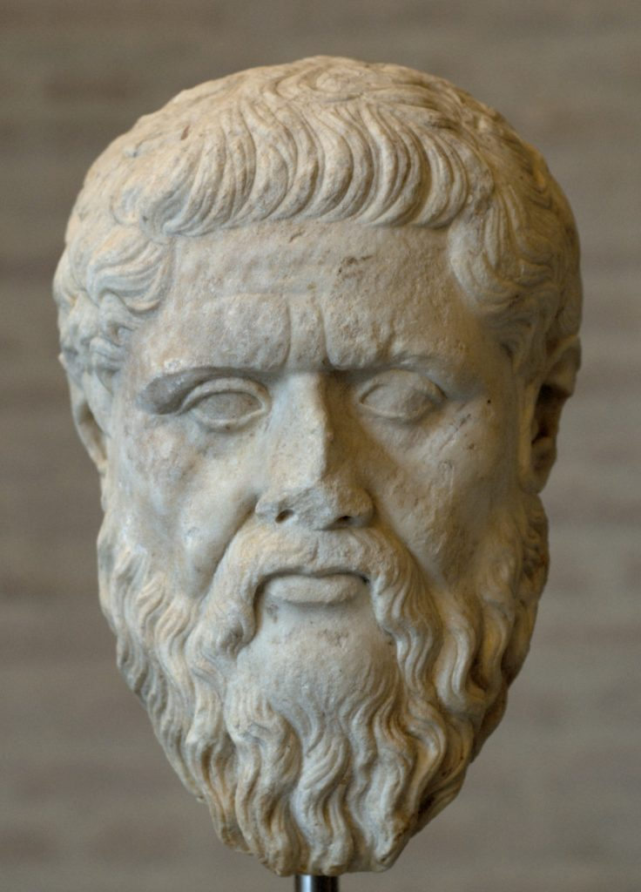

Sokrates
| Data urodzenia | 469 p.n.e. |
|---|---|
| Data śmierci | 399 p.n.e. |
| Miejsce urodzenia | Ateny |
Życiorys
- Ateńczyk z gminy Alopeke
- Brał udział w kampaniach wojennych i poza nimi nie opuszczał miasta
- Był człowiekiem niezależnym i dumnym, skromnym i nieprzyjmującym pieniędzy
- Prowadził dyskusje na ulicach, zadając ludziom pytania
- Został oskarżony o psucie młodzieży i o bezbozność
- Skazany na śmierć nie skorzystał z pomocy, aby uciec od wyroku, ale go przyjął z szacunku dla prawa
- Do ostatniej chwili toczył rozmowy ze swymi uczniami
- Po jego śmierci Ateńczycy wznieśli mu pomnik, a jego oskarżycieli wygnano
- Nie zostawił po sobie żadnych pism
Poglądy
- Odrzucenie nauki o przyrodzie a skoncentrowanie na człowieku i jego problemach
- Dusza jest to centrum człowieka, jego myśli i działań, świadomości oraz indywidualności intelektualnej i moralnej
- Dusza wymaga troski
- Metoda sokratyczna poszukiwania wiedzy polegała na prowadzeniu dialogu
- Metoda ta dzieli się na elenktyczną, która polega na krytycznym badaniu argumentów dyskutanta, wręcz na ich ironicznym zbijaniu, oczyszczeniu umysłu z fałszywych przekonań oraz majeutyczną polegającą na wspólnym poszukiwaniu odpowiedzi na postawione pytanie
- Intelektualizm etyczny - zlokalizowanie kwestii dobra i zła w sferze intelektu, a nie woli. Nikt dobrowolnie nie chce zła.
- Cnota - jest to wiedza na temat dobra, wystarczy wiedzieć by być dobry.

Platon
| Data urodzenia | 427 p.n.e. |
|---|---|
| Data śmierci | 347 p.n.e. |
| Miejsce urodzenia | Ateny |
Życiorys
- Pochodził ze znakomitego rodu, co wpłynęło na jego późniejsze zainteresowanie polityką.
- W wieku 18 lat został porwany przez piratów i sprzedany. Na targu niewolników wykupił go krewny.
- W wieku 20 lat poznał Sokratesa. Spędził 8 lat pobierając u niego nauki.
- Po śmierci Sokratesa opuścił Ateny i podróżował przez 12 lat
- Po powrocie do Aten założył szkołę i oddał się pisaniu rozpraw oraz nauczaniu
- Znaczną większość jego pism stanowią dialogi np. Fedon
Poglądy
- Idee są rzeczywiste, wieczne i zawsze zachowują wyższość nad tym, co realne.
- celem człowieka powinna być realizacja idei dobra, do której prowadzą dobra realne. Utożsamiał on jednak dobro z pięknem i prawdą.
- Stworzył koncepcję utopii, którą wzorował na surowym polis Sparty. Uważał, że rządzić powinni filozofowie. Ustrój tego państwa był totalitarny.
- Dopatrywał się nieśmiertelnego pierwiastka w człowieku
- Dusza jest niematerialna oraz oddzielna, niezależna i doskonalsza od ciała
- Zmysły nie tylko nie sięgają idei, ale też nie wystarczają do poznania rzeczy. Myśl, choć występuje po postrzeżeniu, nie opiera się na nim.

Arystoteles ze Stagiry
| Data urodzenia | 384 p.n.e. |
|---|---|
| Data śmierci | 322 p.n.e. |
| Miejsce urodzenia | Stagira |
Życiorys
- Pochodził z rodziny lekarzy
- W 367 r. przybył do Aten i wstąpił do Platońskiej Akademii, w której spędził 20 lat
- Około 343 r. został wybrany przez Filipa Macedońskiego na nauczyciela Aleksandra.
- Arystoteles uczył go aż do objęcia władzy przez ucznia. Powrócił do Aten, gdzie założył własną szkołę.
- wypracował własny system filozoficzny, wyprowadzony z platonizmu, ale do niego opozycyjny.
Poglądy
- Świat jest wieczny, i jednocześnie przestrzennie ograniczony. Znany nam świat jest światem jedynym. Odbywa się w nim jeden i ten sam proces stopniowego formowania materii, urzeczywistnienia tego, co w niej potencjalnie założone. A więc świat stanowi jednolity łańcuch przyczynowo i celowo powiązanych zdarzeń.
- Jeśli istnieje świat to istnieje również absolut.
- Doskonałość polega na działaniu rozumu, jako osnowie doskonałego życia
- Byt jest czymś samodzielnym (pogląd w opozycji do Platona, który uważał, że bytami są tylko idee)
- Substancja składa się z formy i materii
- Sformował arguemnt kosmologiczny (argument pierwszej przyczyny) z któego wynika, że pierwszą przyczyną jest absolut
- Rezygnuje zarówno z moralizmu, jak również z hedonizmu, oczywiście nie odrzuca poszukiwania szczęścia, wręcz przeciwnie, zachęca, ale poprzez czynienie cnoty i na drodze cnoty